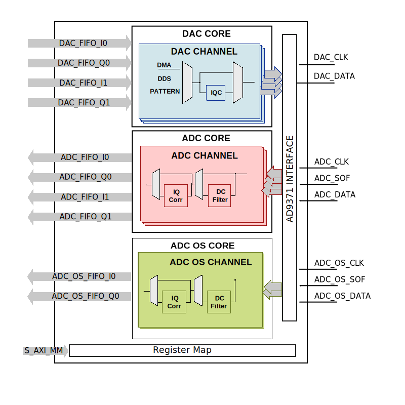

AXI CLK Generator
The AXI CLK Generator IP core is a software programmable clock generator.
Features
The top module, library/axi_clkgen/axi_clkgen.v, instantiates a MMCM wrapper, the register map and the AXI handling interface.
The ad_mmcm_drp is a wrapper over MMCM, which can instantiate a Virtex 6 MMCM or 7 Series MMCM. Detailed information regarding the 7 Series MMCM can be found in AMD Xilinx UG472 and UG953.
The register map allows resetting the MMCM, changing the clock source, checking the status of the MMCM lock and controlling the DRP interface.
Files
Name |
Description |
|---|---|
Verilog source for the peripheral. |
Block Diagram
Configuration Parameters
Note
Both pulse width and pulse offset are in number of clock cycles.
Name |
Description |
|---|---|
ID |
Core ID should be unique for each IP in the system |
CLKIN_PERIOD |
Default clock period for CLKIN1 |
CLKIN2_PERIOD |
Default clock period for CLKIN2 |
VCO_DIV |
DIVCLK_DIVIDE MMCM parameter |
VCO_MUL |
CLKFBOUT_MULT_F MMCM parameter |
CLK0_DIV |
CLKOUT0_DIVIDE_F MMCM parameter |
CLK0_PHASE |
CLKOUT0_PHASE MMCM parameter |
CLK1_DIV |
CLKOUT1_DIVIDE MMCM parameter |
CLK1_PHASE |
CLKOUT1_PHASE MMCM parameter |
Interface
Name |
Description |
|---|---|
clk |
Reference clock 1 |
clk2 |
Reference clock 2 |
clk_* |
Output clock, 1 and 2 |
s_axi |
AXI Slave Memory Map interface |
Register Map
DWORD |
BYTE |
Reg Name |
Description |
|||
|---|---|---|---|---|---|---|
BITS |
Field Name |
Type |
Default Value |
Description |
||
0x10 |
0x40 |
RSTN |
Interface Control & Status |
|||
[1] |
MMCM_RSTN |
RW |
0x0 |
MMCM reset (required for DRP access). Reset, default is IN-RESET (0x0), software must write 0x1 to bring up the core. |
||
[0] |
RSTN |
RW |
0x0 |
Reset, default is IN-RESET (0x0), software must write 0x1 to bring up the core. |
||
0x11 |
0x44 |
CLK_SEL |
Clock Select |
|||
[0] |
CLK_SEL |
RW |
0x0 |
Select betwen CLKIN1 (0x0) or CLKIN2 (0x1) input clock for the MMCM |
||
0x17 |
0x5c |
MMCM_STATUS |
MMCM Status |
|||
[0] |
MMCM_LOCKED |
RO |
0x0 |
LOCKED status of the MMCM |
||
0x1c |
0x70 |
DRP_CNTRL |
ADC Interface Control & Status |
|||
[28] |
DRP_RWN |
RW |
0x0 |
DRP read (0x1) or write (0x0) select (does not include GTX lanes). |
||
[27:16] |
DRP_ADDRESS |
RW |
0x000 |
DRP address, designs that contain more than one DRP accessible primitives have selects based on the most significant bits (does not include GTX lanes). |
||
[15:0] |
DRP_WDATA |
RW |
0x0000 |
DRP write data (does not include GTX lanes). |
||
0x1d |
0x74 |
DRP_STATUS |
MMCM Status |
|||
[17] |
MMCM_LOCKED |
RO |
0x0 |
LOCKED status of the MMCM |
||
[16] |
DRP_STATUS |
RO |
0x0 |
If set indicates busy (access pending). The read data may not be valid if this bit is set (does not include GTX lanes). |
||
[15:0] |
DRP_RDATA |
RO |
0x0000 |
DRP read data (does not include GTX lanes). |
||
0x50 |
0x140 |
FPGA_VOLTAGE |
FPGA device voltage information |
|||
[15:0] |
FPGA_VOLTAGE |
RO |
0x0000 |
The voltage of the FPGA device in mv |
||
Access Type |
Name |
Description |
|---|---|---|
RW |
Read-write |
Reads will return the current register value. Writes will change the current register value. |
RO |
Read-only |
Reads will return the current register value. Writes have no effect. |